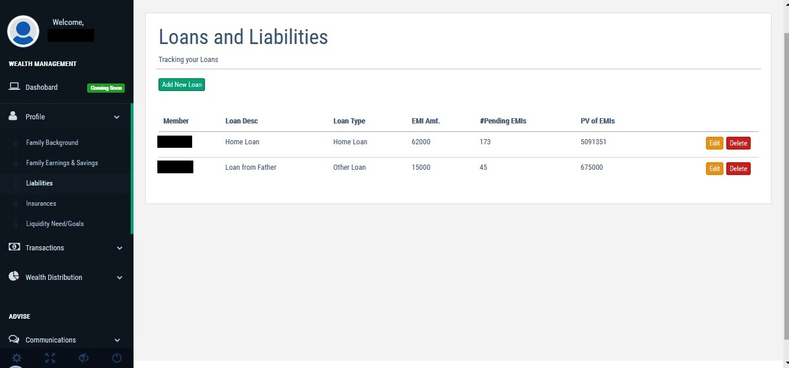

What we do
What Timeline of Wealth is all about?
Timeline of wealth provides you a platform (a technology solution) to track and monitor your Asset Allocation. Seek professional and independent advice from any professional.
How does it work?
1) First Time Audit: Giving independent professional advice requires information that is sufficient enough for any independent finance professional to give you her unbiased opinion regarding your wealth distribution and ongoing and future investments that is most importantly "Suitable" for you.
[Note: Maintaining privacy and security of your information is our highest priority task. Please read Privacy Code, Terms and Ethical Standards]
2) Seek independent advice regarding overall long-term Strategic Asset Allocation or advice regarding particular investment product or insurance product : Based on the information provided any professional will assess your risk-taking ability and to some extent your willingness to accept risk and judge suitability of investment products, current wealth distribution, insurance need and so on. It is possible for a Professional now to give you independent and unbiased advice in less time as information gathering (audit phase) is already done.
3) Monitor your wealth : Frequent monitoring is equally important because Asset Allocation changes due to change in value and net income, investments or consumptions.
4) Audit new investment information and align to Long-Term Strategic Asset Allocation : Audit incremental information related to new income, investments, and savings.
5) Repeat step no. 3 and 4 : Wealth management (creation or maintenance) is a continuous process of monitoring and adjusting to strategic allocation which also changes with time and other life events.
What kind of information is required for a professional to guide you?
1. Family Background: To understand ability to take risk
2. Income, Expenses & Savings:
1) Again to identify the ability to take a risk. 2) To predict lifestyle spending amount. More correctly you track this data, better you may predict your lifestyle spending requirements in future for retirement. Fill this data with the help of Income Tax Filing Documents (ITR-V) and Total Annual Investments. Moreover, this is a top-down approach to track expenses, so requires fewer efforts, unlike a bottom-up approach in which you track individual expenses.3. Loans & Liability: Track your Home Loan and other liabilities (Car, Personal Loans etc.)

4. Insurance: Audit your insurance details to identify insurance cover and
identify endowment insurances (insurance come saving products) those can be surrendered5. Liquidity Need or Financial Goals:
Events those consume wealth (future -short and long-term- big-ticket expenditures beyond regular income)6. Ongoing SIPs/Regular Investments:
Audit your PF-PPF, Endowment Insurance, Other Tax Saving Investments and Mutual Fund SIPs. Identify how current savings/investments are being distributed among asset classes. This will answer the question have you selected the wrong instrument? Is your current regular investment distribution right?7. Audit your entire wealth across family members (also link SIPs):
One time as well as a recurring activity to audit new investments (other than SIPs) also audit exit from investments. This is very important, spouse's willingness to take risk is high so better other member slowdowns so that overall balance is made. Also, most of the time members are not aware of family investments. So, this is one place where all investments are clubbed together.8. Find Out your Current Wealth Distribution Across Asset Classes - Sub Classes for Each Family Member and Across Family Members:
Get opinions on Current Wealth Distribution by professional(s). Select your Long Term Strategic Asset Allocation Plan based on so far audited information which will derive your ability to take a risk (Your willingness to take risk is also equally important). Based on the current market scenario and asset classes future performance do tactical changes (predefined deviation from Strategic Asset Allocation) if required. This Allocation will keep changing due to: 1) Market Value Change 2) New Savings or Investments or liquidity events. This requires monitoring at least once in a quarter.9. Track History of Wealth and Wealth Distribution (Wealth Distribution History is pending though):
Track performances of asset classes and products/securities/assets under asset classes. Check performance with Benchmark. Remove consistent underperforming products/securities/asset. [Upcoming as of now, only Wealth history and Wealth distribution history is being tracked, performance assessment is upcoming]